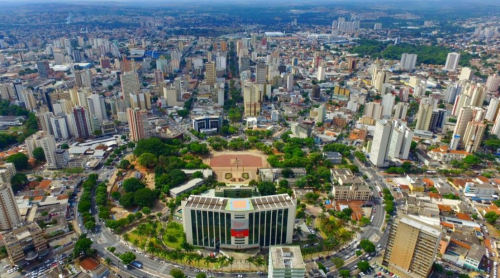
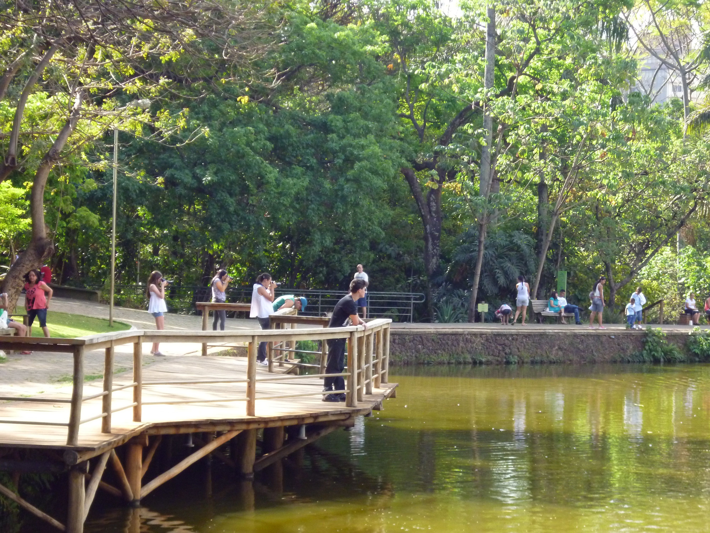
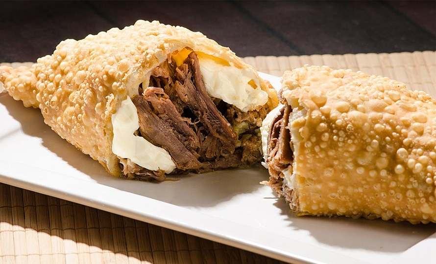
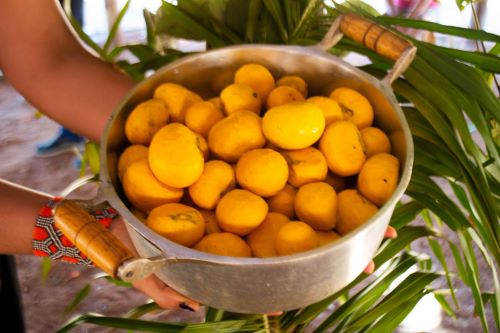

Goiânia
Goiânia, a capital do estado de Goiás, é uma cidade que encanta com sua diversidade cultural, gastronomia única e áreas verdes. Conhecida como a "Cidade Verde", Goiânia oferece uma mistura de modernidade e natureza, tornando-a um destino atraente para visitantes de todas as idades.

Praça Cívica - Goiânia
Bosque dos Buritis
O Bosque dos Buritis é um parque urbano no coração de Goiânia, conhecido por sua beleza natural, lagos e esculturas. É um local perfeito para caminhar, fazer piqueniques e apreciar a natureza no meio da cidade.

Feira da Lua
A Feira da Lua é uma feira de artesanato e comida que acontece semanalmente em Goiânia. Os visitantes podem encontrar uma variedade de produtos artesanais, roupas, acessórios e pratos típicos da região.
Pastel Goiano
O pastel goiano é uma iguaria típica da região, recheada com queijo, carne de sol, e pequi. É uma combinação de sabores que conquista o paladar dos visitantes.

Pequi
O pequi é uma fruta típica da região do Cerrado, e é um ingrediente importante na culinária goiana. É usado em pratos como o arroz com pequi, dando um sabor único e marcante.
